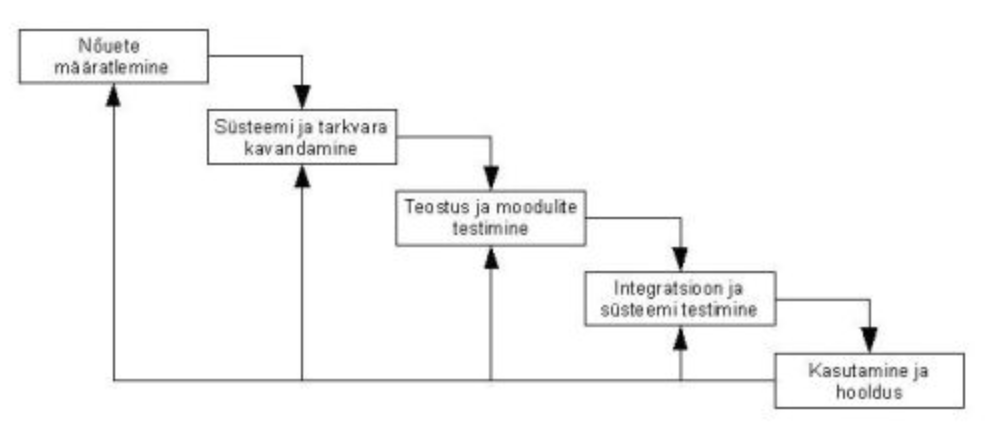

Koskmudel (ka klassikaline mudel) on esimene kirjeldatud tarkvarasüsteemi elutsükli mudel, mis lähtus tavalistest tootmisprotsessidest ehituses, mehhaanikas vms. Koskmudel on kõige vanem ja kõige rohkem kritiseeritud protsessimudel.
Nõuete määramine
Süsteemi tarkvara kavandamine
Teostus ja moodulite testimine
Integratsiooni ja süsteemide testimine
Kasutamine ja hooldus
Selge struktuur, kerge hallata, põhjalik dokumentatsioon, Sobiv hästi selgete nõuetega projektidele
Vähe paindlikkust, halb tagasiside võimalus, sobimatu keerukatele ja muutuvatele projektidele,
